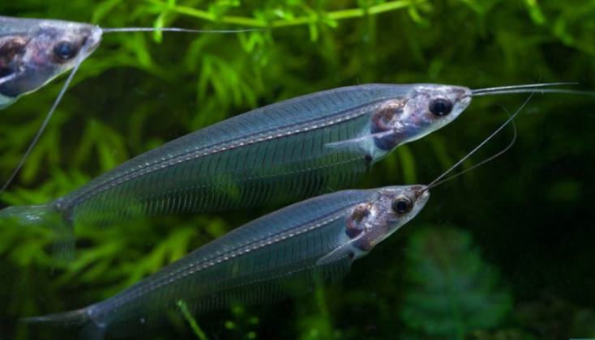

Systématique
- Ordre : Siluriformes
- Famille : Siluridae
- Genre : Kryptopterus
- Espèce : K. vitreolus

Kryptopterus vitreolus, universellement connu sous le nom de Silure de verre ou Poisson de verre, est une curiosité de la nature. Jusqu'à sa description officielle en 2013 par Ng et Kottelat, il était commercialisé sous les noms erronés de K. bicirrhis (espèce plus grande et opaque) ou K. minor.
Il mesure entre 6 et 8 cm. Sa particularité est son corps totalement transparent qui laisse voir son squelette et ses organes internes (regroupés dans un sac argenté juste derrière la tête).
C'est un poisson délicat et sensible, qui sert souvent d'indicateur de santé de l'aquarium : s'il devient blanc laiteux ou opaque, c'est un signe de stress intense, de maladie ou de mauvaise qualité d'eau.
Contrairement à la majorité des silures qui vivent au fond, le Silure de verre est un poisson de pleine eau. C'est une espèce strictement grégaire qui doit vivre en banc d'au moins 10 à 15 individus.
Son comportement est unique : le banc reste souvent stationnaire face au courant, ondulant doucement des nageoires, en position oblique. Isolé, il dépérit rapidement et peut mourir de stress. Il est très pacifique mais timide, et ne doit être associé qu'à des espèces calmes et non agressives.
Mode : ovipare.
La reproduction est extrêmement rare et difficile en aquarium, et très peu documentée. Elle serait saisonnière, liée à la mousson (changements de paramètres d'eau, baisse de température).
La plupart des spécimens disponibles dans le commerce sont issus de captures en milieu naturel ou d'élevages semi-naturels en Asie.
Dimorphisme sexuel : Très peu visible. Les femelles matures peuvent apparaître légèrement plus rondes au niveau de la cavité abdominale.
Espérance de vie : Environ 5 à 8 ans si maintenu dans de bonnes conditions.
Il est endémique de Thaïlande (péninsule et sud-est). Il habite les rivières côtières et les cours d'eau lents aux eaux brunes ("eaux noires"), acides et turbides, souvent ombragés par la canopée.
Répartition

Origine naturelle :
- Asie du Sud-Est.
- Thaïlande (Région de Trat et péninsule).
- Bassins fluviaux côtiers se jetant dans le golfe de Thaïlande.
Paramètres de maintenance
Température : 23 à 27 °C.
pH : 5,5 à 7,0 (préfère une eau acide et douce).
GH : 4 à 12 °dGH.
Pollution : Très sensible aux nitrates et aux changements brusques de paramètres.
Volume conseillé : Minimum 100 L. Bien que peu nageur (stationnaire), il nécessite de l'espace pour maintenir un banc suffisant et une eau très stable.
Régime alimentaire
Régime : carnivore / micro-prédateur.
Dans la nature, il se nourrit de zooplancton et de petits insectes en suspension.
En aquarium, il peut être difficile au début. Il préfère nettement les proies vivantes ou congelées (daphnies, artémias, vers de vase, cyclops) qui flottent dans le courant. Il finit par accepter les paillettes et granulés de bonne qualité.